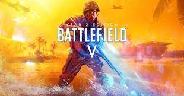

BATTLEFIELD
La franquicia Battlefield (en español: «Campo de batalla») es una serie de videojuegos
de disparos en primera persona, de estilo bélico, desarrollada principalmente por EA Digital
Illusion CE y distribuida por Electronic Arts.

Existen varias versiones del juego Battlefield
- Battlefield 1942: Secret Weapons of WWII
- Battlefield 1942: The Road to Rome
- Battlefield Vietnam
- Battlefield 2
- Battlefield 2: Modern Combat
- Battlefield 2 Special Forces
- Battlefield 2142
- Battlefield 2142: Northern Strike
- Battlefield: Bad Company
- Battlefield Heroes
- Battlefield 1943
- Battlefield: Bad Company 2